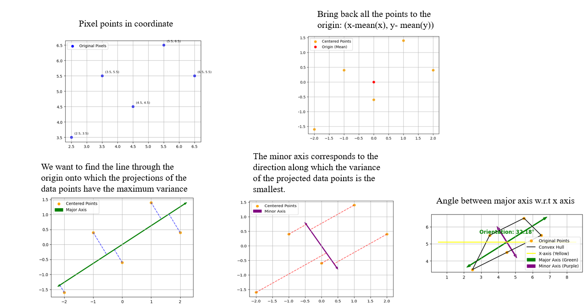

In this post, I'm going to explain how we can find the orientation of an object (e.g., a weird-shaped potato) using the largest eigenvector.
When analyzing weird potato shapes or any kind of shapes, we often wonder what the best way to determine their orientation is. If we look at the shape from our human perspective, we try to find the orientation based on its maximum variance or the direction in which the shape is most spread out.
This can be achieved by applying the initial steps of Principal Component Analysis (PCA). PCA finds the directions (principal components) along which the data varies the most. The first principal component (associated with the largest eigenvalue) points in the direction of maximum variance. This direction effectively captures the main orientation of the shape.
By computing the eigenvectors of the covariance matrix of the shape's coordinates, we can determine the orientation of the shape. The angle between the largest eigenvector and the x-axis gives us the orientation angle.
This method is computationally efficient and robust, and it provides a reliable orientation based on the overall distribution of points, rather than relying on edges or moments alone.
Below, I will explain the steps you can follow alongside the diagram to help you better understand:
By calculating the eigenvectors of the covariance matrix of the defect points, we determine the principal axis that best represents the defect's main direction. The orientation angle derived from this axis is then used to define the defect's length and width accurately, aligned with its natural geometric features rather than arbitrary axes.
You can find the maths behind the Eigenvector at this page Math explanation
Note that the orientation is 0–180 degrees from left to right. Below I will show you how I implemented this method in Python.
import cv2
import numpy as np
import matplotlib.pyplot as plt
import os
import math
from glob import glob
image_folder = '/input/shapes-oc'
image_paths = sorted(glob(os.path.join(image_folder, '*.png')))
num_images = len(image_paths)
cols = 3
rows = (num_images + cols - 1) // cols
plt.figure(figsize=(15, 5 * rows))
for i, image_path in enumerate(image_paths):
# Load and preprocess image
img = cv2.imread(image_path)
gray = cv2.cvtColor(img, cv2.COLOR_BGR2GRAY)
_, thresh = cv2.threshold(gray, 127, 255, cv2.THRESH_BINARY_INV) # Invert if needed
contours, _ = cv2.findContours(thresh, cv2.RETR_EXTERNAL, cv2.CHAIN_APPROX_NONE)
if not contours:
continue
contour = max(contours, key=cv2.contourArea)
data_pts = contour.reshape(-1, 2).astype(np.float32)
mean = np.mean(data_pts, axis=0)
centered = data_pts - mean
cov = np.cov(centered.T)
eigenvalues, eigenvectors = np.linalg.eig(cov)
sort_indices = np.argsort(eigenvalues)[::-1]
eigenvectors = eigenvectors[:, sort_indices]
eigenvalues = eigenvalues[sort_indices]
angle_rad = np.arctan2(eigenvectors[1, 0], eigenvectors[0, 0])
angle_deg = np.degrees(angle_rad) % 180
center = tuple(mean.astype(int))
length = 100
pt2 = (int(center[0] + length * eigenvectors[0, 0]),
int(center[1] + length * eigenvectors[1, 0]))
output_img = img.copy()
cv2.circle(output_img, center, 5, (0, 0, 255), -1)
cv2.arrowedLine(output_img, center, pt2, (0, 255, 0), 2, tipLength=0.4)
output_img_rgb = cv2.cvtColor(output_img, cv2.COLOR_BGR2RGB)
plt.subplot(rows, cols, i + 1)
plt.imshow(output_img_rgb)
plt.title(f"{os.path.basename(image_path)}\nOrientation: {angle_deg:.2f}°")
plt.axis('off')
plt.tight_layout()
plt.show()